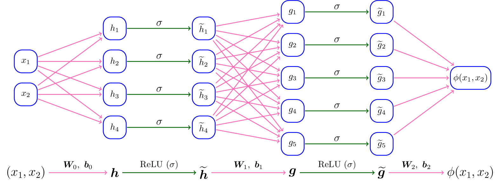

Interests
Research Interests:
Deep neural networks have made significant impacts in many
fields of computer science and engineering especially for large-scale and high-dimensional learning problems. Well-designed neural network architectures, efficient training algorithms, and high-performance computing technologies have made neural-network-based methods very successful in tremendous real applications. Especially in supervised learning, e.g., image classification and objective detection, the great advantages of neural-network-based methods have been demonstrated over traditional learning methods. Understanding the approximation power of deep neural networks has become a key question for revealing the power of deep learning. A large number of experiments in real applications have shown the large capacity of deep network approximation from many empirical points of view, motivating much effort in establishing the theoretical foundation of deep network approximation. One of the fundamental problems is the characterization of the (optimal) approximation error of deep neural networks in terms of the network size measured in the width, the depth, the number of neurons, or the number of parameters.
Currently, I am quite interested in studying the approximation error.
Designing efficient optimization algorithms and analyzing the generalization bounds two other separate future directions.
See the discussion of the approximation error, the optimization error, and the generalization error below.
\( \require{color}
\def\R{{\mathbb{R}}}
\def\bm#1{{\boldsymbol{#1}}}
\def\tn#1{{\text{#1}}}
\def\argmin{\mathop{\tn{arg\(\,\)min}}}
\)
In supervised learning, an unknown target function $f(\boldsymbol{x})$ defined on a domain $\Omega$ is learned through its finitely many samples $\{( \boldsymbol{x}_i,f(\boldsymbol{x}_i){ )}\}_{i=1}^n$. If neural networks are applied in supervised learning, the following optimization problem is solved to identify a neural network $\phi(\boldsymbol{x};\boldsymbol{\theta}_{\mathcal{S}})$ with $\boldsymbol{\theta}_{\mathcal{S}}$ as the set of parameters to infer $f(\boldsymbol{x})$ for unseen data samples $\boldsymbol{x}$:
\begin{equation}\label{eqn:emloss}
\boldsymbol{\theta}_{\mathcal{S}}=\argmin_{\boldsymbol{\theta}}R_{\mathcal{S}}(\boldsymbol{\theta}),\quad \tn{where}
\ R_{\mathcal{S}}(\boldsymbol{\theta}):=
\frac{1}{n}\sum_{i=1}^n \ell\big( \phi(\boldsymbol{x}_i;\boldsymbol{\theta}),f(\boldsymbol{x}_i)\big)
\end{equation}
with a loss function typically taken as $\ell(y,y')=\frac{1}{2}|y-y'|^2$. The inference error is usually measured by $R_{\mathcal{D}}(\bm{\theta}_{\mathcal{S}})$, where
\begin{equation*}%\label{eqn:poloss}
R_{\mathcal{D}}(\bm{\theta}):=
\tn{E}_{\bm{x}\sim U(\Omega)} \left[\ell( \phi(\bm{x};\bm{\theta}),f(\bm{x}))\right],
\end{equation*}
where the expectation is taken with an {unknown data distribution $U(\Omega)$} over $\Omega$.
Note that the best neural network to infer $f(\bm{x})$ is $\phi(\bm{x};\bm{\theta}_{\mathcal{D}})$ with $\bm{\theta}_{\mathcal{D}}$ given by
\begin{equation*}%\label{eqn:poloss}
\bm{\theta}_{\mathcal{D}}=\argmin_{\bm{\theta}} R_{\mathcal{D}}(\bm{\theta}).
\end{equation*}
The best possible inference error is
$R_{\mathcal{D}}(\bm{\theta}_{\mathcal{D}})$. In real applications, $U(\Omega)$ is unknown and only finitely many samples from this distribution are available. Hence, the empirical loss $R_{\mathcal{S}}(\bm{\theta})$ is minimized hoping to obtain $\phi(\bm{x};\bm{\theta}_{\mathcal{S}})$, instead of minimizing the population loss $R_{\mathcal{D}}(\bm{\theta})$ to obtain $\phi(\bm{x};\bm{\theta}_{\mathcal{D}})$. In practice, a numerical optimization method to solve Equation \eqref{eqn:emloss} may result in a numerical solution (denoted as $\bm{\theta}_{\mathcal{N}}$) that may not be a global minimizer $\bm{\theta}_{\mathcal{S}}$. Therefore, the actually learned neural network to infer $f(\bm{x})$ is $\phi(\bm{x};\bm{\theta}_{\mathcal{N}})$ and the corresponding inference error is measured by $R_{\mathcal{D}}(\bm{\theta}_{\mathcal{N}})$.
By the discussion just above, it is crucial to quantify $R_{\mathcal{D}}(\bm{\theta}_{\mathcal{N}})$ to see how good the learned neural network $\phi(\bm{x};\bm{\theta}_{\mathcal{N}})$ is, since $R_{\mathcal{D}}(\bm{\theta}_{\mathcal{N}})$ is the expected inference error over all possible data samples. Note that
\begin{equation}\label{eqn:gen}
\begin{aligned}
{R_{\mathcal{D}}(\bm{\theta}_{\mathcal{N}})}
&={\underbrace{[R_{\mathcal{D}}(\bm{\theta}_{\mathcal{N}})-R_{\mathcal{S}}(\bm{\theta}_{\mathcal{N}})]}_{\tn{GE}}
+\underbrace{[R_{\mathcal{S}}(\bm{\theta}_{\mathcal{N}})-R_{\mathcal{S}}(\bm{\theta}_{\mathcal{S}})]}_{\tn{OE}} +\underbrace{[R_{\mathcal{S}}(\bm{\theta}_{\mathcal{S}})-R_{\mathcal{S}}(\bm{\theta}_{\mathcal{D}})]}_{\tn{$\le 0$ by Equation \eqref{eqn:emloss}}} +\underbrace{[R_{\mathcal{S}}(\bm{\theta}_{\mathcal{D}})-R_{\mathcal{D}}(\bm{\theta}_{\mathcal{D}})]}_{\tn{GE}}
+\underbrace{R_{\mathcal{D}}(\bm{\theta}_{\mathcal{D}})}_{\tn{AE}}
}%%%%%%%%%%%%
\nonumber \\
&\le{ \underbrace{R_{\mathcal{D}}(\bm{\theta}_{\mathcal{D}})}_{\color{blue}\tn{Approximation error (AE)}} \ +\ \underbrace{[R_{\mathcal{S}}(\bm{\theta}_{\mathcal{N}})-R_{\mathcal{S}}(\bm{\theta}_{\mathcal{S}})]}_{\color{blue}\tn{Optimization error (OE)}}\ + \ \underbrace{[R_{\mathcal{D}}(\bm{\theta}_{\mathcal{N}})-R_{\mathcal{S}}(\bm{\theta}_{\mathcal{N}})]
+[R_{\mathcal{S}}(\bm{\theta}_{\mathcal{D}})-R_{\mathcal{D}}(\bm{\theta}_{\mathcal{D}})]}_{\color{blue}\tn{Generalization error (GE)}}},
\end{aligned}\end{equation}
where the inequality comes from the fact that $[R_{\mathcal{S}}(\bm{\theta}_{\mathcal{S}})-R_{\mathcal{S}}(\bm{\theta}_{\mathcal{D}})]\leq 0$ since $\bm{\theta}_{\mathcal{S}}$ is a global minimizer of $R_{\mathcal{S}}(\bm{\theta})$. The constructive approximation established in this paper and in the literature provides an upper bound of $R_{\mathcal{D}}(\bm{\theta}_{\mathcal{D}})$ in terms of the number of intrinsic parameters. The second term of Equation \eqref{eqn:gen} is bounded by the optimization error of the numerical algorithm applied to solve the empirical loss minimization problem in Equation \eqref{eqn:emloss}. If the numerical algorithm is able to find a global minimizer, the second term is equal to zero. The theoretical guarantee of the convergence of an optimization algorithm to a global minimizer $\bm{\theta}_{\mathcal{S}}$ and the characterization of the convergence belong to the optimization analysis of neural networks. The third and fourth term of Equation \eqref{eqn:gen} are usually bounded in terms of the sample size and a certain norm of the corresponding set of parameters $\bm{\theta}_{\mathcal{N}}$ and $\bm{\theta}_{\mathcal{D}}$, respectively. The study of the bounds for the third and fourth terms is referred to as the generalization error analysis of neural networks.

An example of a ReLU network with width 5 and depth 2.